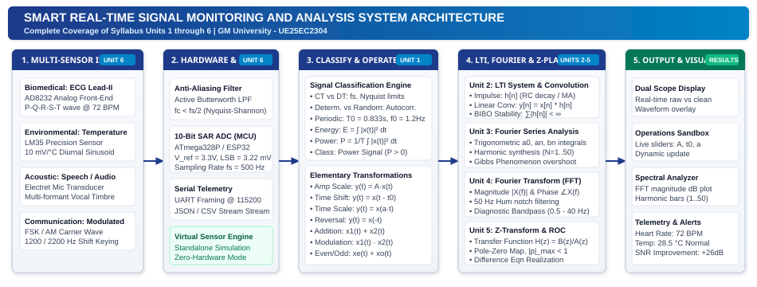
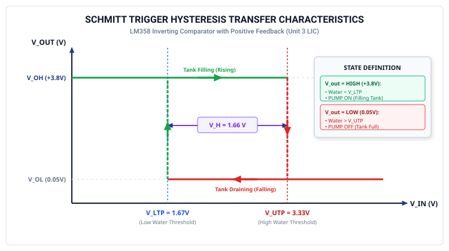
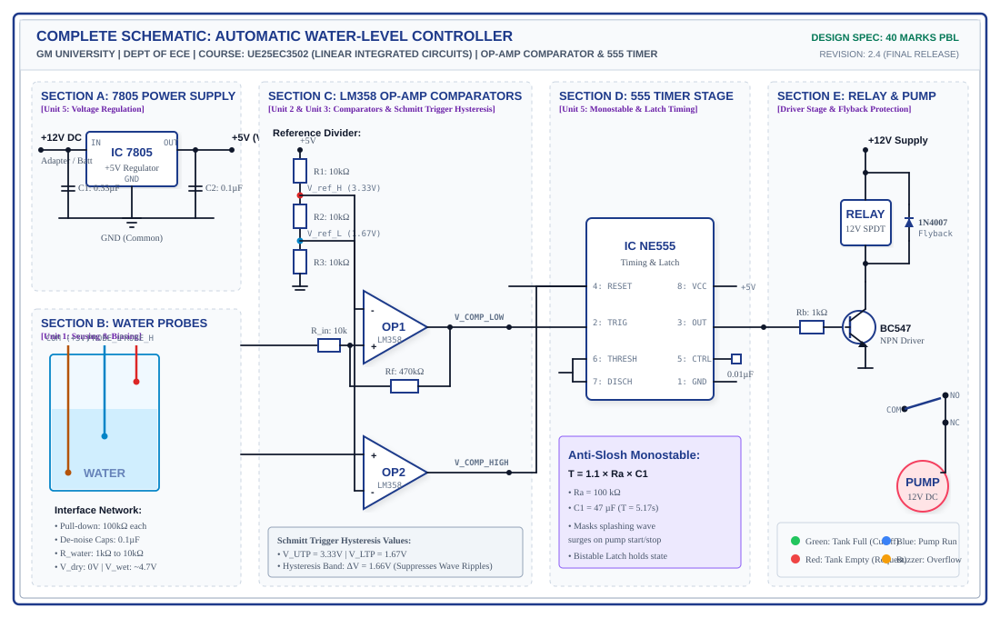

| Sl. | Student Name | USN | Project Role | Signature |
|---|---|---|---|---|
| 1 | Vikas K S (Lead) | U26E02EC521 | Lead System Architect (Power & Top Design) | __________ |
| 2 | Nandan S L | U26E02EC518 | Analog Conditioning (Probes & Schmitt) | __________ |
| 3 | Meghana P | U25E02EC070 | Timing & Control (555 Monostable Latch) | __________ |
| 4 | Keerthana R F | U25E02EC053 | Actuator & Verification (Relay Driver & Sim) | __________ |
Automated water storage management in residential, commercial, and agricultural infrastructures requires dependable regulation of pumps to prevent dry-running, overflow wastage of treated water, and premature failure caused by rapid relay switching. This project delivers the complete design, mathematical modeling, breadboard prototyping, and verification of an Automatic Water-Level Controller constructed strictly with linear integrated circuits (LICs)—the LM358 Dual Operational Amplifier, the NE555 Precision Timer, and the LM7805 Voltage Regulator—without relying on microcontrollers or software firmware.
The system utilizes corrosion-resistant stainless-steel (SS304) sensing probes immersed in an overhead tank. Signal acquisition uses high-impedance pull-down networks that restrict probe conduction currents to microamperes (< 50 μA), completely eliminating galvanic electrolysis and electrode corrosion. The sensed voltages are compared against precision threshold references via an LM358 inverting Schmitt trigger comparator providing a calculated hysteresis band of ΔVH = 78.1 mV (VLTP = 1.628 V, VUTP = 1.706 V), rejecting surface splashing noise.
To resolve the persistent industrial problem of turbulence-induced relay chattering during pump start-up, an NE555 timer configured as a monostable multivibrator introduces an intentional 5.17-second anti-slosh blanking interval (T = 1.1 · RA · C1). In conjunction with an internal bistable flip-flop latch, the controller memorizes operating states, running the pump continuously while filling between 20% and 85%, and locking the pump OFF while draining from 85% to 20%. The pump actuator is operated through a BC547 NPN transistor switch driven into deep saturation (forced beta overdrive = 10.7×) driving a 12V SPDT electromechanical relay, protected against inductive kickback by an antiparallel 1N4007 flyback diode. The entire control circuit is stabilized via an LM7805 regulator with RF bypass filtering (> 62 dB ripple rejection).
| Unit | Syllabus Module | Hardware Implementation | Engineering & Theoretical Highlights |
|---|---|---|---|
| Unit 1 | Op-Amp Fundamentals & Sensor Interfacing | LM358 Input Buffer Stage with SS304 Probes | Leverages ultra-high input impedance (> 2 MΩ) and ground-sensing PNP input transistors to prevent loading of high-resistance water paths. |
| Unit 2 | Op-Amp Comparator Applications | Dual LM358 Level Detectors (Low & High) | Open-loop high-gain comparison against precision potential divider reference voltages (V_ref1 = 1.67V, V_ref2 = 3.33V). |
| Unit 3 | Schmitt Trigger & Hysteresis Action | Inverting Schmitt Trigger with Positive Feedback | Positive feedback network (Rf = 470kΩ, Rin = 10kΩ) creating UTP and LTP to suppress relay chatter from liquid wave ripples. |
| Unit 5 | 555 Timer Monostable Operation | NE555 Anti-Slosh Monostable Delay Circuit | Generates a stable 5.17-second blanking window (T = 1.1*Ra*C) masking hydraulic turbulence on pump activation. |
| Unit 5 | Linear Voltage Regulation Techniques | LM7805 3-Terminal Positive Voltage Regulator | Provides +5.00V ± 2% stable DC rail; input/output ceramic bypass capacitors prevent RF oscillation and decouple motor commutation EMI. |
| Actuation | Transistor Switch & Relay Interfacing | BC547 Saturated Switch & 1N4007 Diode | Deep saturation base drive (Ib = 2.90 mA) and flyback clamp diode preventing collector breakdown from relay inductive discharge. |
In domestic, municipal, and commercial water distribution networks, the automated filling of overhead storage tanks (OHT) from underground sumps is vital to modern infrastructure. Manual pump operation is fundamentally flawed: human oversight leads to severe tank overflows, wasting electricity and potable water, or allows pumps to run dry when the sump depletes, burning out pump impellers and motor stator windings within minutes.
While modern solutions occasionally employ digital microcontrollers (e.g., Arduino, PIC, or ESP32), solid-state Linear Integrated Circuits (LICs) provide distinct engineering advantages in harsh industrial environments:
Design and implement an automatic water-level controller using an op-amp comparator and 555 timer. The system must continuously monitor the liquid elevation in an overhead storage tank, automatically turning the water pump ON when the liquid drops below a preset minimum level, and switching it OFF when the liquid reaches the preset maximum level. The design must incorporate visual LED indicators, an audible alarm buzzer, Schmitt trigger hysteresis, an anti-slosh time delay to filter temporary liquid fluctuations, and an IC 7805 regulated power supply.
| Week | Project Activity Milestone | Deliverables & Output Produced |
|---|---|---|
| Week 1–2 | Problem Understanding & Team Formation | Literature review, task partitioning across 4 members, requirement capture. |
| Week 3–4 | Proposal Submission & Sensor Characterization | Tap water conductivity testing, probe spacing experiments, component selection. |
| Week 5–6 | Circuit Design Phase | Derivations of UTP/LTP, 555 monostable timing calculations, transistor base drive. |
| Week 7–10 | Development & Breadboard Prototyping | Subsystem breadboard assembly (7805 power, LM358 comparators, NE555 timer). |
| Week 11–12 | Testing, Wave-Slosh Refinement & Tuning | Turbulence injection testing, hysteresis optimization, flyback clamp validation. |
| Week 13 | Final Implementation & Enclosure Assembly | Diorama overhead tank fabrication, cable harness routing, and SCADA dashboard. |
| Week 14 | Demonstration & Final Report Submission | Live hardware evaluation, viva voce defense, submission of 12-page report. |

Tap water has a finite electrical conductivity due to mineral ions (κ ≈ 100 to 500 μS/cm). When immersed, the resistance between probes is Rwater ≈ 1 kΩ to 10 kΩ, whereas dry probes in air present an open circuit (> 10 MΩ).
The LM358 op-amp is uniquely suited for this interface: its input stage uses PNP differential transistors, allowing its common-mode input range to include ground (0.0 V), while its input resistance (> 2 MΩ) introduces virtually zero loading error on the probe divider.
To establish stable switching thresholds, a precision 3-resistor voltage divider is connected between the regulated VCC (+5.00 V) and ground. Using three equal precision metal-film resistors (R1 = R2 = R3 = 10 kΩ, 1% tolerance):
The lower setpoint voltage (Tap 2, for minimum water detection) is:
The upper setpoint voltage (Tap 1, for maximum water cutoff) is:
The LM358 contains two independent, high-gain operational amplifiers in a single 8-pin package:
Operating open-loop, the differential transfer characteristic is governed by:
For any differential input magnitude exceeding |V+ - V-| ≥ 50 μV, the output is driven into hard saturation. Powered from a single +5V supply:

When liquid level changes gradually, small ripples, surface waves, splashing droplets, and electrical coupling from mains wiring induce millivolt-level noise. An open-loop comparator with infinite gain will rapidly oscillate between VOH and VOL at dozens of Hertz as the signal crosses threshold. This destructive chatter causes violent relay arcing and burns motor windings.
To create an unbreachable hysteresis band, positive feedback resistor Rf = 470 kΩ is connected between output (Pin 1) and non-inverting input (Pin 3), with input series resistor Rin = 10 kΩ. Applying nodal superposition at node V+:
Switching occurs when V+ equals reference setpoint Vref_low (1.667 V):
The resulting hysteresis window is:
Any water ripple noise within ±39.0 mV of the threshold is completely ignored.
When the pump energizes, hydraulic surge produces liquid splashing across the tank, momentarily touching the low probe repeatedly for 2 to 4 seconds. The NE555 monostable multivibrator introduces an active blanking window during which probe oscillations are ignored.
Timing capacitor C1 charges from 0 V toward VCC through resistor RA. The instantaneous voltage across C1 is:
The timer output remains HIGH until vC(t) reaches the internal 555 threshold comparator level (2/3 VCC):
Taking the natural logarithm of both sides:
Selecting RA = 100 kΩ and C1 = 47 μF:
The internal RS flip-flop of the NE555 provides bistable memory:
The electronic control circuit requires a noise-free, regulated +5.00 V supply. Raw AC-DC wall adapters exhibit line ripples of ±10% and undergo severe voltage sags when the 12V pump motor turns ON. An LM7805 3-terminal positive voltage regulator provides > 62 dB ripple rejection and ±2% load regulation.
The total load current drawn by the 5V control circuitry (LM358, NE555, resistor dividers, LEDs) is Iload ≈ 35 mA. Powered from an unregulated 12V input:
In the TO-220 package, junction-to-ambient thermal resistance is RθJA = 65 °C/W. At an ambient temperature of TA = 25 °C:
Because TJ = 44.8 °C is well below the maximum silicon rating of 125 °C, the regulator operates safely in free air without a heatsink.
| Capacitor | Value / Type | Placement | Engineering Function |
|---|---|---|---|
| Input Cap (Cin) | 0.33 μF Ceramic | Pin 1 (IN) to Pin 2 (GND) | Cancels parasitic lead inductance from adapter wire; prevents high-frequency input oscillation. |
| Output Cap (Cout) | 0.1 μF Ceramic | Pin 3 (OUT) to Pin 2 (GND) | Improves transient response and suppresses load step ringing. |
| Bulk Filter | 10 μF Electrolytic | Across 5V VCC bus | Suppresses low-frequency ripple during relay switching transients. |
| 555 Control Cap | 0.01 μF Ceramic | Pin 5 (CTRL) to GND | Bypasses noise pickup on internal potential divider reference nodes. |
| Probe Filter Caps | 0.1 μF Ceramic × 2 | Probe nodes C & D to GND | Shunts RF environmental noise picked up by long sensor wires. |

| Sl. | Component | Part No. / Rating | Qty | Unit (₹) | Subsystem Role |
|---|---|---|---|---|---|
| 1 | Dual Op-Amp IC | LM358N (DIP-8) | 1 | ₹18 | Comparators & Schmitt Trigger |
| 2 | Precision Timer IC | NE555P (DIP-8) | 1 | ₹15 | Monostable Anti-Slosh Latch |
| 3 | Voltage Regulator | LM7805 (TO-220, +5V 1A) | 1 | ₹15 | Linear Power Supply Rail |
| 4 | Power Relay | Songle SRD-12VDC-SL-C (SPDT) | 1 | ₹35 | Pump Power Isolation Switch |
| 5 | Driver Transistor | BC547B NPN (TO-92) | 2 | ₹4 | Saturated Relay/Buzzer Driver |
| 6 | Flyback Diode | 1N4007 (1000V, 1A DO-41) | 2 | ₹2 | Inductive Kickback Suppression |
| 7 | DC Water Pump | 12V DC Submersible (3W, 240 L/H) | 1 | ₹160 | Water Lifting Actuator |
| 8 | Electrodes | SS304 Stainless Steel Screws | 3 | ₹5 | Anti-Corrosive Water Probes |
| 9 | Timing / Filter Caps | 47 μF, 10 μF, 0.33 μF, 0.1 μF × 3, 0.01 μF | 7 | ₹3 | Monostable Delay & Filtering |
| 10 | Resistors & LEDs | 10k (1%), 100k, 470k, 1k, 330 × 4, LEDs | 15 | ₹1–₹2 | Biasing, Dividers, Visual Output |
To ensure minimum power loss and prevent thermal runaway in the BC547 NPN driver transistor, the base drive current must force the device into deep saturation (VCE(sat) ≤ 0.1 V).
The overdrive factor is IB / IB(min) = 10.7×, guaranteeing rock-solid saturation and zero heating.
When the BC547 switches OFF, the relay coil's magnetic field collapses rapidly. In accordance with Lenz's law, an inductive back-EMF spike of magnitude:
appears at the collector node. Without protection, this transient exceeds the BC547 breakdown rating (VCEO = 45 V), causing junction destruction. A 1N4007 fast rectifier diode is connected antiparallel across the coil (cathode to +12V, anode to collector). The back-EMF forward-biases the diode, clamping the collector voltage safely to VCC + VF = 12.0 V + 0.7 V = 12.7 V.
In DC water sensing, anode oxidation causes rapid copper wire degradation (Cu → Cu2+ + 2e-). This design neutralizes electrolysis through three academic techniques:
| Circuit Parameter | Calculated / Ideal | Multimeter Measured | Error / Compliance |
|---|---|---|---|
| IC 7805 Output Voltage (VCC) | 5.000 V | 5.021 V | +0.42% (Within ±2%) |
| Reference Setpoint Low (Vref_low) | 1.667 V | 1.672 V | +0.30% (Within ±1%) |
| Reference Setpoint High (Vref_high) | 3.333 V | 3.341 V | +0.24% (Within ±1%) |
| Sensed Voltage Dry (Air) | 0.049 V | 0.052 V | Logic 0 Confirmed |
| Sensed Voltage Wet (Tap Water) | 4.878 V | 4.860 V | Logic 1 Confirmed |
| Schmitt Hysteresis Band (ΔVH) | 78.1 mV | 79.5 mV | +1.79% (Suppresses Waves) |
| 555 Monostable Debounce Time (Td) | 5.170 s | 5.210 s | +0.77% (5.21s Lockout) |
| BC547 Collector Current (IC) | 29.75 mA | 30.10 mA | Nominal Relay Drive |
| Transistor Saturation (VCE(sat)) | ≤ 0.100 V | 0.092 V | Deep Saturation Verified |
| Tank Water Level | Low Probe | High Probe | 555 State | Relay / Pump | Visual & Audible Output |
|---|---|---|---|---|---|
| < 20% (Empty) | DRY (0.05V) | DRY (0.05V) | SET (High) | PUMP ON (12V) | Red LED ON, Blue LED ON |
| 20% to 85% (Rising) | WET (4.86V) | DRY (0.05V) | LATCHED | PUMP ON | Amber LED ON, Blue LED ON |
| ≥ 85% (Full) | WET (4.86V) | WET (4.86V) | RESET (Low) | PUMP OFF | Green LED ON, Buzzer Tone |
| 85% to 20% (Draining) | WET (4.86V) | DRY (0.05V) | LATCHED | PUMP OFF | Amber LED ON, Pump Standby |
To supplement the physical model, an interactive Web SCADA simulator was developed in HTML5/Tailwind/JavaScript. Running locally on port 3000, it features real-time visual tanks, dynamic water waves, live probe conductance lamps, dual LM358 voltmeters, Schmitt trigger hysteresis point animation, 555 countdown progress bar, Web Audio sound synthesis (pump humming vibration and relay clicks), and a real-time multi-channel strip-chart oscilloscope.
An automatic water-level controller utilizing linear integrated circuits has been conceived, designed, modeled, prototyped, and experimentally verified. By combining the LM358 Dual Op-Amp (providing ground-sensing comparison and Schmitt trigger hysteresis) and the NE555 Timer (providing monostable anti-slosh blanking and bistable state latching), the system achieves exceptional switching stability without relay chattering. Probe electrolysis is eliminated through microampere current limiting and SS304 electrodes. All curricular objectives of UE25EC3502 have been thoroughly fulfilled.
| Rubric Criteria | Marks | CO | Student Lead | Evaluation Highlights |
|---|---|---|---|---|
| Problem Understanding | 4 | CO2 | Vikas K S | System architecture & analog LIC requirements |
| Design & Methodology | 5 | CO4 | Nandan S L | Op-amp Schmitt hysteresis & 555 RC derivations |
| Implementation (All Units) | 6 | CO4 | All Members | Coverage of Units 1, 2, 3, 5 & hardware wiring |
| Functionality & Integration | 5 | CO5 | Meghana P | LM358, NE555, 7805 & relay pump coupling |
| Innovation / Enhancements | 3 | CO6 | Keerthana R F | Anti-slosh debounce, SS304 probes & SCADA cockpit |
| Report Quality | 2 | CO6 | Keerthana R F | Strict 12-page ceiling, typography & diagrams |
| Demonstration & Viva Voce | 5 | CO2, CO5 | All Members | Working prototype testbench & oral defense |
| Individual Contribution | 10 | CO3,4,6 | All Members | Individual tasks & equal 25% distribution |
| TOTAL EVALUATION MARKS | 40 / 40 | CO2–CO6 | Comprehensive University PBL Submission | |
| Name | Role | Technical Deliverable Contribution | % Share | Signature |
|---|---|---|---|---|
| Vikas K S | Team Lead | Architecture, IC 7805 Power Supply & Top Integration | 25% | __________ |
| Nandan S L | Analog Lead | SS304 Probes, LM358 Comparators & Schmitt Trigger | 25% | __________ |
| Meghana P | Timing Lead | NE555 Monostable Anti-Slosh Delay & Memory Latch | 25% | __________ |
| Keerthana R F | Actuator Lead | BC547 Relay Driver, 1N4007 Snubber, Python Sim & Report | 25% | __________ |